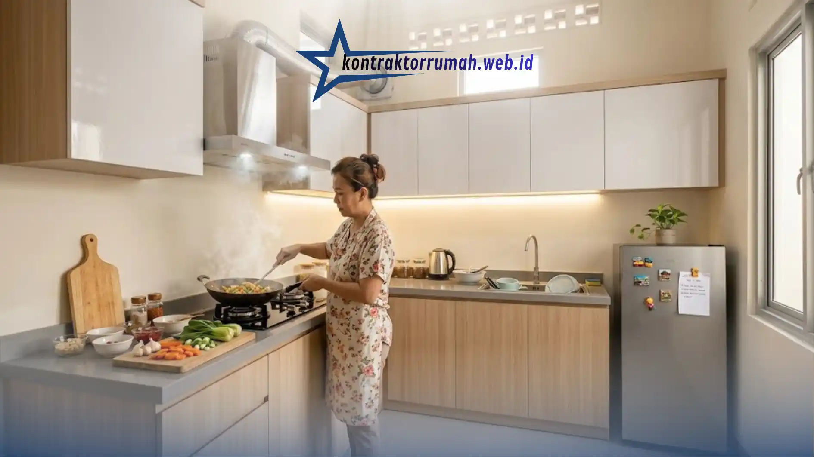

Dapur pada rumah subsidi type 36 umumnya memiliki ukuran terbatas dengan tata ruang yang masih sangat dasar. Artikel ini membahas secara lebih mendalam tahapan renovasi dapur, mulai dari perencanaan tata letak, pemilihan material, hingga cara menyiasati masalah sirkulasi udara yang sering ditemui pada dapur rumah subsidi.
Poin Penting
- Dapur bawaan rumah subsidi belum punya kabinet permanen, sehingga tata letak dapat dirancang bebas sejak awal sesuai kebutuhan.
- Manfaatkan posisi saluran air & titik listrik yang sudah ada agar biaya renovasi lebih efisien.
- Tata letak satu garis cocok untuk dapur sempit memanjang, sedangkan L-shape untuk sudut ruangan yang lebih lebar.
- Kabinet multipleks berlapis HPL lebih tahan lembap dibanding particle board biasa.
- Kombinasi ventilasi tambahan & exhaust fan efektif mengatasi dapur yang terasa pengap.
Mengapa Dapur Rumah Subsidi Perlu Perencanaan Tata Letak yang Matang
Dapur bawaan rumah subsidi biasanya belum dilengkapi kabinet permanen dan hanya menyediakan area kosong dengan saluran air serta titik instalasi listrik dasar. Kondisi ini sebenarnya menguntungkan pemilik rumah karena tata letak dapur dapat dirancang dari awal sesuai kebutuhan, bukan sekadar mengubah tatanan yang sudah ada.
Perencanaan tata letak yang matang membantu memastikan alur kerja dapur, mulai dari menyimpan bahan makanan, mencuci, hingga memasak, berjalan efisien meski dalam ruang yang tidak terlalu luas. Tanpa perencanaan yang jelas, dapur sempit berisiko terasa sesak dan sulit digunakan secara nyaman dalam jangka panjang.
Tahapan Renovasi Dapur Rumah Subsidi Type 36
Bagaimana Langkah Awal Merencanakan Renovasi Dapur?
Langkah awal merencanakan renovasi dapur rumah subsidi adalah mengukur luas ruangan secara akurat, menentukan posisi saluran air dan titik listrik yang sudah ada, kemudian menyesuaikan konsep tata letak dengan kondisi tersebut agar biaya renovasi lebih efisien.
Mengukur ruang secara akurat penting dilakukan sebelum menentukan model kabinet maupun tata letak perabot. Posisi saluran air yang sudah terpasang dari awal pembangunan sebaiknya dimanfaatkan semaksimal mungkin, karena memindahkan jalur pipa air biasanya membutuhkan biaya tambahan yang cukup signifikan.
Setelah pengukuran selesai, pemilik rumah dapat menentukan apakah tata letak satu garis, L-shape, atau bentuk lain yang lebih sesuai dengan bentuk ruangan yang tersedia.
Bagaimana Memilih Tata Letak Dapur yang Sesuai Ukuran Ruangan?
Tata letak dapur satu garis umumnya paling sesuai untuk dapur rumah subsidi berukuran sempit dan memanjang, sementara tata letak L-shape lebih cocok digunakan pada dapur dengan sudut ruangan yang lebih lebar.
Pada tata letak satu garis, seluruh elemen dapur seperti kompor, wastafel, dan area penyimpanan disusun sejajar pada satu sisi dinding. Model ini memudahkan pergerakan penghuni tanpa perlu berjalan bolak-balik ke sisi ruangan yang berbeda.
Sementara itu, tata letak L-shape memanfaatkan dua sisi dinding yang saling bersudut, sehingga area kerja dapur menjadi lebih luas dibandingkan model satu garis. Tata letak ini cocok digunakan apabila dapur menyatu dengan area servis seperti tempat cuci dan jemur pakaian.
Bagaimana Memilih Kabinet Dapur yang Tepat untuk Rumah Subsidi?
Kabinet dapur yang tepat untuk rumah subsidi sebaiknya menggunakan material yang tahan lembap seperti multipleks dilapis HPL, dengan desain kabinet atas dan bawah untuk memaksimalkan kapasitas penyimpanan tanpa menambah luas lantai.
Kabinet bawah biasanya digunakan untuk menyimpan peralatan masak berukuran besar, sementara kabinet atas lebih cocok untuk menyimpan bahan makanan kering atau peralatan yang jarang digunakan. Pembagian fungsi ini membantu menjaga meja dapur tetap rapi dan tidak dipenuhi barang.
Dari sisi material, multipleks yang dilapisi HPL dipilih karena lebih tahan terhadap kelembapan dibandingkan particle board biasa, sehingga usia pakainya cenderung lebih panjang meskipun berada di lingkungan dapur yang sering terkena uap air.
Bagaimana Cara Mengatasi Dapur Rumah Subsidi yang Terasa Pengap?
Dapur rumah subsidi yang terasa pengap dapat diatasi dengan menambahkan bukaan ventilasi tambahan, memasang exhaust fan di dekat area memasak, serta mengurangi sekat tertutup yang dapat menghalangi aliran udara.
Banyak dapur rumah subsidi dibangun dengan satu sisi dinding tertutup penuh tanpa ventilasi tambahan, sehingga udara panas dan asap memasak sulit keluar. Penambahan bukaan angin di bagian atas dinding dapur, misalnya menggunakan roster atau kisi-kisi ventilasi, dapat membantu sirkulasi udara tanpa mengurangi keamanan ruangan.
Sebagai pelengkap, exhaust fan yang dipasang di area dekat kompor bekerja secara aktif menyedot udara panas dan asap keluar ruangan, sehingga suhu dapur tetap terjaga meski digunakan dalam waktu memasak yang cukup lama.

Sirkulasi udara dan pencahayaan yang baik membuat aktivitas memasak di dapur rumah subsidi type 36 terasa lebih nyaman.
Bagaimana Menata Pencahayaan Dapur agar Lebih Nyaman Digunakan?
Pencahayaan dapur yang nyaman dapat diperoleh dengan mengombinasikan cahaya alami dari jendela atau ventilasi dengan pencahayaan buatan berupa lampu utama di tengah ruangan dan lampu tambahan di area kerja seperti wastafel dan kompor.
Cahaya alami membantu mengurangi konsumsi listrik pada siang hari sekaligus membuat dapur terasa lebih segar. Namun, karena keterbatasan bukaan pada rumah subsidi, pencahayaan buatan tetap diperlukan terutama untuk area kerja yang membutuhkan pencahayaan lebih fokus, seperti saat memotong bahan makanan atau mencuci peralatan masak.
Tips Tambahan Renovasi Dapur Rumah Subsidi
Beberapa tips tambahan yang dapat dipertimbangkan saat merenovasi dapur rumah subsidi meliputi pemilihan warna dinding yang terang untuk kesan ruang lebih luas, penggunaan cermin atau material reflektif secukupnya, serta menghindari terlalu banyak sekat tertutup yang dapat membuat ruangan terasa sempit.
Selain itu, pemilihan perabot dengan ukuran yang proporsional terhadap luas dapur juga penting diperhatikan. Perabot berukuran terlalu besar justru dapat mengurangi ruang gerak dan membuat aktivitas memasak menjadi kurang nyaman.
Catatan dari tim Kontraktor Rumah: Kontraktor Rumah beroperasi sebagai mitra konstruksi berbadan hukum PT resmi, siap membantu perencanaan renovasi dapur rumah subsidi type 36 mulai dari pengukuran ruang, penyusunan RAB transparan, hingga eksekusi oleh tenaga kerja berpengalaman. Pemilihan kabinet multipleks berlapis HPL serta penambahan ventilasi dan exhaust fan menjadi standar kerja tim dalam menangani proyek renovasi dapur rumah subsidi di kawasan Jabodetabek.
FAQ Seputar Renovasi Dapur Rumah Subsidi
Renovasi dapur rumah subsidi type 36 sebaiknya dimulai dari pengukuran ruang dan pemanfaatan instalasi air serta listrik yang sudah tersedia. Pemilihan tata letak satu garis atau L-shape dapat disesuaikan dengan bentuk ruangan, sementara kabinet berbahan multipleks berlapis HPL menjadi pilihan yang relatif tahan lama. Penambahan ventilasi dan exhaust fan juga penting untuk menjaga kenyamanan dapur, terutama pada rumah subsidi yang umumnya memiliki bukaan udara terbatas.